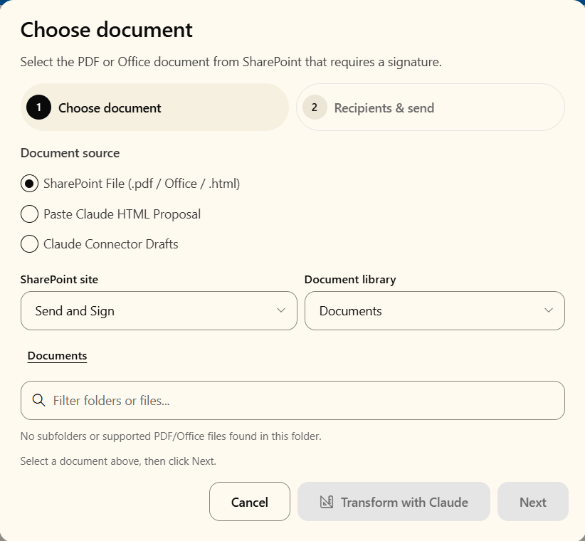
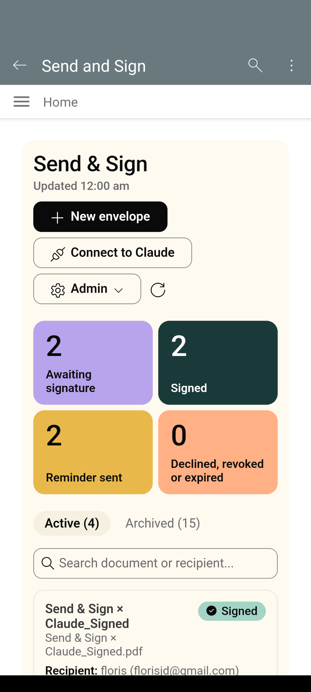

Features
Everything you need to get it signed — without leaving SharePoint.
A SharePoint web part for your team, a zero-sign-in portal for your clients, and a tamper-evident record of every step in between.

Seamless Microsoft 365
A 2-step New Envelope wizard.
Pick the document, add recipients, send. That's it.
- Step 1 — Choose document. Browse any permitted site, library or folder with breadcrumb navigation, file type, size and modified date. Supports PDFs and interactive HTML proposals (Office files appear with a "save as PDF first" hint).
- Step 2 — Recipients & attachments. Single or multi-signature (up to 20 signers), plus optional supporting files from SharePoint or your computer with a live size indicator.
- One central hub across sites & Teams. Connect multiple SharePoint sites and Microsoft Teams (personal app or channel tab) to one master tracking list via the Admin menu.
- Sent from your own mailbox. Invitations come from the sender's Microsoft 365 account with their native email signature, so clients recognise and trust them.


Multi-signature routing
Up to 20 signers. Parallel or sequential.
Every signer gets a recipient-tethered single-use link, their own 6-digit email verification, and their own entry on the certificate.
- Parallel: everyone is invited at once and can sign in any order
- Sequential: a strict 1 → 2 → 3 … → 20 order — the next signer is invited automatically
- Mix external clients and internal approvers on one envelope
Signing experience
Click to place. Sign your way.
Signers see the real document, then put their signature exactly where it belongs.
- Nothing is shown before the 6-digit email code — and signing unlocks only after the document opens on the signer's device
- Zoom from 50% to 300% and click anywhere on the page to place the signature box
- Keyboard-accessible: a Place box button and arrow-key nudging
- Draw on a high-DPI pad, type, or upload an image of a signature
- Electronic consent notice with an option to sign on paper instead, plus decline with a reason
- Automatic light and dark mode, with custom logo and brand colours available on Custom plans
SharePoint Mobile App · iOS & Android
Send, track and remind from anywhere.
Because Send & Sign is a responsive SharePoint Framework web part, it runs inside the SharePoint Mobile App you already have. No separate install.
- Browse libraries and launch the New Envelope wizard
- Configure up to 20 parallel or sequential signers
- Check status, read the audit timeline, remind or revoke
- Clients sign in any mobile browser with a touch-optimised pad

Dashboard & audit
Know where every agreement stands.
- Clickable KPI cards: Awaiting signature, Signed, Reminder sent, Declined/revoked/expired
- An automatic Needs attention card if a seal or save ever fails — failures are never marked as signed
- Plain-English audit timeline for every envelope, with one-click SHA-256 copy
- Open folder jumps straight to the SharePoint folder with the original and signed copy
- One-click reminders issue a fresh link and retire the old one; unsigned envelopes expire automatically
- Revoke any unused link with a clear confirmation step


And the details
Small things that save hours.
Same-folder save-back
{OriginalName}_Signed.pdf (or _Signed.html) lands next to the untouched original, verified against its SHA-256 fingerprint before being marked saved.
Zero-PowerShell setup
Tracking and settings lists and the archive folder are provisioned automatically the first time a site owner opens the page.
Decline with a reason
Signers can decline and explain why. The reason is recorded in the audit trail and the link is retired.
Custom branding (Custom tier)
Add your logo and brand colours to the signing portal and emails, with automatic WCAG-friendly contrast and dark mode.
A copy for every party
Every party receives a completion email with the signed PDF attached (up to 10 MB) — no login required to keep a copy.
Admin-only audit archive
SharePoint admins archive completed batches into a SHA-256 fingerprinted JSON audit ledger stored in one central folder.
Interactive proposals & Transform with Claude.
Turn static PDF quotes into interactive, mobile-friendly HTML proposals where clients tick add-ons, choose pricing tiers and fill in fields before signing. AUD totals and 10% GST are recalculated on our server and locked into the signed copy.
Optional AI studio: Transform with Claude is turned on per organisation and includes a text-fidelity check against the source PDF before sending. When used, the chosen document is sent to Anthropic for processing (listed as a sub-processor).
- Checkboxes, radio pricing tiers and text inputs locked into
_Signed.html - All scripts and active content stripped and rendered in a strict sandbox
- Refine drafts with plain-English instructions, then review and send from SharePoint
- One-click Verify HTML integrity checks the embedded evidence pack right in SharePoint
Simple contracts only · PDF & interactive HTML proposals. Send & Sign is built for everyday agreements under the Electronic Transactions Act 1999 (Cth) s 10. It is not intended for deeds, witnessed instruments, wills, powers of attorney, statutory declarations, affidavits or land-registry documents. Word, Excel and PowerPoint files must be saved as PDF first. Read full scope & exclusions.
Stop downloading, re-uploading and chasing signatures.
See Send & Sign running inside your own SharePoint — from document pick to signed copy back in the same folder — in a 20-minute demo.